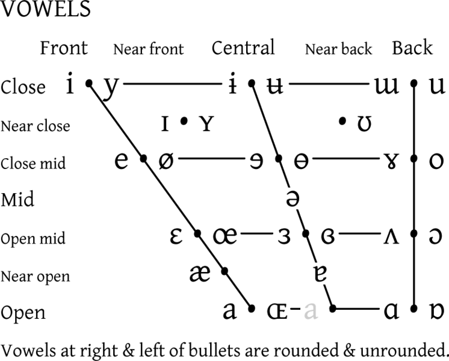

IPA Time!
here's an ipa chart:
some things to note here! the left to right rows describe the phones' horizontal position in the mouth, they go from the front of the mouth to the back respectively. also, within the boxes, the phones that are voiced are on the right and the voiceless phones on the right. also, the chart goes from most to least constriction in the mouth from the top to bottom. finally, there are a few not listed withing the actual chart. w, the sound in 'change' and the sound in 'judged' are listed outside of the cart because they are a bit more complicated and don't fit exactly, w is a glide i believe and the other two are technically whatever the consonant equivalent of a diphthong is.
the most important thing to know about the chart is that it has symbols on it representing sounds that don't exist in english! even ones you might not expect! for example, the letter r is on the ipa chart, and we have a lot of words with r!! but actually, the r on the chart represents a trill and not the rhotic r we have in english (and also irish bc irish slays)!!! relatedly, some english sounds on there, like the sound in 'there' are on there but represented by unfamiliar symbols!!!
here's a vowel chart:

so what can we notice about this chart?? first, we notice that it's all weird and slanted. this is to represent the way sounds can exist in
the mouth, because as you get more open/go lower, your vowels start to automatically turn a bit more central than truly front!!! we can also
tell that the distinction between vowels is a bit more iffy/nonspecific than with consonants!! that's just more of a natural response to the
wider opening business!!! also, tense vowels are around the outer edges of the diagram (like i and u). similarly to the other ipa chart,
some of the symbols on there represent sounds we don't have in english and some english sounds are represented by symbols we've never seen
or only seen in specific contexts. also, some sounds on there don't sound like what they look like (i is like in cheese and e is like in
pay). finally, with vowels you get a lot of diphthongs. these are represented by a tie situation over the two sounds you're linking, and i'm
pretty sure that they're very picky about what counts a diphthong and what is just two vowels smooshed together. so. sad for the world ig.
not super related but interesting is that there's this fun little thing called the caught/cot merger which is where some versions of english have that little backwards c vowel sound, such as some types of british english, and they say like. cuawt. vs in the us we typically just use the a or 'ah' sound (i think it's technically alpha iirc) and say like. cahwt.